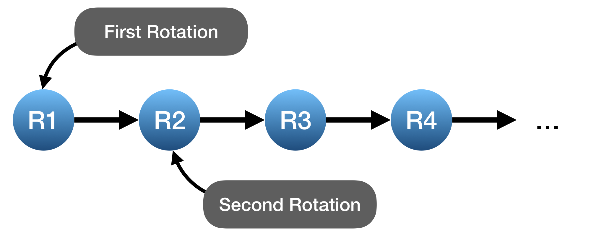

Composing rotations
Multiple rotations represented can be composed using the function:
compose_rotation(R1, R2, R3, R4...)in which R1, R2, R3, ..., must be of the same type. This method returns the following rotation:

Currently, this method supports DCMs, Euler angle and axis, Euler angles, and Quaternions.
julia> D1 = angle_to_dcm(0.5, 0.5, 0.5, :XYZ)DCM{Float64}: 0.770151 0.622447 -0.139381 -0.420735 0.659956 0.622447 0.479426 -0.420735 0.770151julia> D2 = angle_to_dcm(-0.5, -0.5, -0.5, :ZYX)DCM{Float64}: 0.770151 -0.420735 0.479426 0.622447 0.659956 -0.420735 -0.139381 0.622447 0.770151julia> compose_rotation(D1, D2)DCM{Float64}: 1.0 3.41413e-17 -1.73278e-17 3.41413e-17 1.0 1.97327e-17 -1.73278e-17 1.97327e-17 1.0julia> ea1 = EulerAngleAxis(30 * pi / 180, [0, 1, 0])EulerAngleAxis{Float64}: Euler angle : 0.523599 rad (30.0°) Euler axis : [0.0, 1.0, 0.0]julia> ea2 = EulerAngleAxis(45 * pi / 180, [0, 1, 0])EulerAngleAxis{Float64}: Euler angle : 0.785398 rad (45.0°) Euler axis : [0.0, 1.0, 0.0]julia> compose_rotation(ea1, ea2)EulerAngleAxis{Float64}: Euler angle : 1.309 rad (75.0°) Euler axis : [0.0, 1.0, 0.0]julia> Θ1 = EulerAngles(1, 2, 3, :ZYX)EulerAngles{Int64}: R(Z) : 1 rad ( 57.2958°) R(Y) : 2 rad ( 114.592°) R(X) : 3 rad ( 171.887°)julia> Θ2 = EulerAngles(-3, -2, -1, :XYZ)EulerAngles{Int64}: R(X) : -3 rad (-171.887°) R(Y) : -2 rad (-114.592°) R(Z) : -1 rad (-57.2958°)julia> compose_rotation(Θ1, Θ2)EulerAngles{Float64}: R(X) : -1.66533e-16 rad (-9.54166e-15°) R(Y) : 9.24446e-33 rad ( 5.29669e-31°) R(Z) : -1.11022e-16 rad (-6.36111e-15°)julia> q1 = angle_to_quat(0.5, 0.5, 0.5, :XYZ)Quaternion{Float64}: + 0.894463 + 0.291567⋅i + 0.172955⋅j + 0.291567⋅kjulia> q2 = angle_to_quat(-0.5, -0.5, -0.5, :ZYX)Quaternion{Float64}: + 0.894463 - 0.291567⋅i - 0.172955⋅j - 0.291567⋅kjulia> compose_rotation(q1, q2)Quaternion{Float64}: + 1.0 + 0.0⋅i + 0.0⋅j + 0.0⋅k
Operator ∘
The rotations can also be composed using the operator ∘, which can be entered by typing \circ and hitting TAB in REPL. In this case, the composition order is the same as those used by DCMs, i.e., the first rotation is the rightmost one.
R = R5 ∘ R4 ∘ R3 ∘ R2 ∘ R1The advantage of using ∘ lies when composing rotations represented by different entities. In this case, they will be automatically converted by the type of the left object.
julia> D = angle_to_dcm(0.5, 0, 0, :ZYX)DCM{Float64}: 0.877583 0.479426 -0.0 -0.479426 0.877583 0.0 0.0 0.0 1.0julia> q = angle_to_quat(0.3, 0, 0, :ZXY)Quaternion{Float64}: + 0.988771 + 0.0⋅i + 0.0⋅j + 0.149438⋅kjulia> D ∘ qDCM{Float64}: 0.696707 0.717356 0.0 -0.717356 0.696707 0.0 0.0 0.0 1.0julia> q ∘ DQuaternion{Float64}: + 0.921061 + 0.0⋅i + 0.0⋅j + 0.389418⋅k